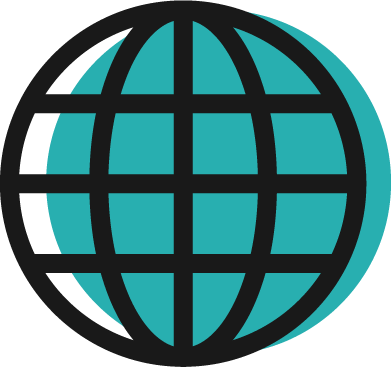

About
Guides
Community
About
Guides
Community

Outside Resources
Additional resources from reliable sources.
The A11Y Project
W3C
Mozilla For Developers
Usibility.gov
WAVE Web Accessibility Evaluation Tool
Funkify Disability Simulator